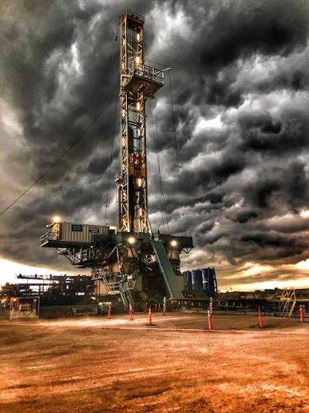

01 / UP · یادداشت Energy Notes
ریسک فقط وقتی فوران میکند دیده نمیشود
بازخوانی روایی مقالهٔ ژانگ یانتینگ و شینگ لییون دربارهٔ ریسک در عملیات نفتی؛ از زمین و هوا تا تجهیزات، آدمها، روابط محلی، سرمایه و سیاست.

صحنه از دکل شروع میشود، اما ریسک آنجا تمام نمیشود
دکل حفاری در تصویر، زیر آسمانی تیره ایستاده است. چراغهای روی سازه روشناند، تجهیزات سر جای خودشان به نظر میرسند و عملیات میتواند طبق برنامه پیش برود. اما در صنعت نفت، همین ظاهر منظم تضمین نمیکند که همهچیز تحت کنترل است. تغییر هوا، فشاری که در اعماق زمین انتظارش را نداشتهایم، تجهیزی که درست انتخاب نشده، تصمیمی که دیر گرفته شده یا نیرویی که آموزش کافی ندیده، میتواند مسیر یک عملیات را عوض کند.
مقالهٔ ژانگ یانتینگ و شینگ لییون از همین نقطه شروع میکند: عملیات نفتی سرمایهبر، طولانی و گسترده است و با زمین، فناوری، انسان و محیط اجتماعی در تماس دائمی قرار دارد. بنابراین ریسک را نمیشود فقط به لحظهٔ انفجار، خرابی یا توقف کار محدود کرد. حادثه معمولاً آخرین حلقهٔ زنجیرهای است که بخشی از آن خیلی زودتر شکل گرفته است.
مسئله فقط حادثه نیست
نویسندگان ریسک را به زبان ساده، فاصلهای میان چیزی که انتظار داریم و چیزی که واقعاً رخ میدهد میبینند؛ فاصلهای که میتواند هزینه، تأخیر، آلودگی یا آسیب انسانی ایجاد کند. از نگاه آنها، مدیریت ریسک قرار نیست شرکت را از هر نوع عدمقطعیتی پاک کند. هدف این است که خطرها زودتر دیده شوند، اثرشان اندازهگیری شود و پیش از آنکه به زیان بزرگ تبدیل شوند، برایشان واکنش و راه کنترل وجود داشته باشد.
این تغییر زاویه مهم است. اگر ریسک فقط بعد از حادثه دیده شود، مدیریت به گزارش و جبران خسارت محدود میشود. اما اگر از ابتدا وارد طراحی پروژه شود، پرسشهای دیگری مطرح میشوند: این سازند زمینشناسی چقدر شناخته شده است؟ روش حفاری با شرایط مخزن سازگار است؟ چه کسی مسئول توقف کار در شرایط ناایمن است؟ اگر قیمت تجهیزات یا سوخت بالا برود، برنامهٔ مالی چه تغییری میکند؟ و اگر عملیات در کنار زمینهای کشاورزی انجام شود، رابطه با جامعهٔ محلی چگونه مدیریت خواهد شد؟
اولین لایه: زمین و هوا
بخشی از ریسک پیش از ورود اولین تجهیز به میدان وجود دارد. باران و برف میتوانند عملیات چاه را دشوار و ناایمن کنند و گرمای شدید احتمال گرمازدگی کارکنان را بالا ببرد. اینها خطرهای آشکاریاند، اما زمینشناسی لایهٔ پنهانتری میسازد.
ساختار مخزن، مقدار و کیفیت ذخیره، عمق دفن، فشار سازند، تراوایی، تخلخل، گسلها و سختی سنگ بر سرعت و کیفیت عملیات اثر میگذارند. هرچه شناخت از این ویژگیها ناقصتر باشد، تصمیمهای بعدی هم شکنندهتر میشوند. ممکن است یک چاه در جای نامناسب قرار بگیرد، فشار واقعی با برآورد اولیه تفاوت داشته باشد یا روش توسعهای انتخاب شود که با رفتار مخزن سازگار نیست.
در اینجا مدیریت ریسک به معنای ترسیدن از طبیعت نیست؛ یعنی پذیرفتن این واقعیت که زیر سطح زمین، اطلاعات همیشه کامل نیست. دادهٔ بهتر، تفسیر محتاطانهتر و طراحی انعطافپذیر میتوانند دامنهٔ غافلگیری را کوچکتر کنند.
لایهٔ دوم: تصمیمهای فنی زنجیرهای هستند
مقاله میان ریسک اکتشاف، توسعه و ساخت تمایز میگذارد، اما نکتهٔ روایی آن در مرز میان این مراحل است. خطا در تفسیر دادهٔ لرزهای یا جانمایی چاه، فقط یک خطای اکتشافی باقی نمیماند؛ میتواند طراحی توسعه، هزینهٔ حفاری و زمان رسیدن به تولید را هم تحت تأثیر قرار دهد.
در مرحلهٔ توسعه، روش نامناسب استخراج، تغییرهای پیدرپی در طراحی، عقبافتادن برنامه یا مشکل فنی میتواند پروژه را از مسیر خود خارج کند. شناخت نادرست سازند، آسیب به جداری، فشار بالای سازند و نادیدهگرفتن کنترل چاه، در متن مقاله بهعنوان عواملی آمدهاند که هم ایمنی و هم اقتصاد عملیات را تهدید میکنند.
در ساخت تأسیسات سطحی نیز مسئله فقط کیفیت یک قطعه نیست. کمبود مهارت فنی، ناهماهنگی تجهیزات و طولانیشدن دورهٔ ساخت میتوانند به یکدیگر متصل شوند. تجهیزی که با بخش دیگر سازگار نیست، فقط خریدی ناموفق نیست؛ ممکن است راهاندازی را عقب بیندازد، هزینه را بالا ببرد و تیم را به تصمیمهای عجولانه سوق دهد.
لایهٔ سوم: سازمان، آدمها و محیط اطراف
بخش مهمی از ریسک در نمودار فرایند دیده نمیشود. کیفیت نیروی انسانی، تجربهٔ مدیران، ترکیب سنی کارکنان، شیوهٔ تقسیم مسئولیت و توان هماهنگی واحدها بر نتیجهٔ عملیات اثر دارد. سازمانی که در آن وظیفهها مبهماند یا واحدها برداشتهای متفاوتی از اولویت ایمنی دارند، حتی با تجهیزات خوب هم آسیبپذیر میماند.
نویسندگان از ریسک تجهیزات عملیاتی هم حرف میزنند. در اکتشاف و توسعه، تجهیزات برای بالا بردن تولید ضروریاند، اما مدیریت نامناسب آنها میتواند خود به مانعی برای پیشرفت تبدیل شود. مسئله فقط خرابی نیست؛ انتخاب، نگهداری، زمانبندی استفاده و هماهنگی تجهیزات با برنامهٔ عملیاتی هم اهمیت دارد.
عملیات نفتی در خلأ اجتماعی انجام نمیشود. وقتی چاهها در کنار زمینهای کشاورزی قرار میگیرند، اختلاف بر سر دسترسی، خسارت یا جبران مالی میتواند عملیات ساخت و حفاری را متوقف کند. چنین اختلافی در متن مقاله یک موضوع فرعی نیست؛ نمونهای است از اینکه ریسک اجتماعی چگونه به تأخیر و زیان اقتصادی تبدیل میشود.
محیطزیست نیز در همین زنجیره قرار دارد. نشت، آلودگی یا دفع نامناسب پسماند فقط هزینهٔ پاکسازی ایجاد نمیکند؛ میتواند جریمه، توقف کار و از دسترفتن اعتماد را به دنبال داشته باشد. رعایت مقررات محیطزیستی در این نگاه بخشی از طراحی عملیات است، نه کاری که بعد از پایان تولید انجام شود.
وقتی عددهای مالی هم وارد چاه میشوند
عملیات نفتی دورهٔ کوتاهی ندارد و معمولاً در جغرافیای وسیعی پخش است. سرمایهٔ زیادی درگیر میشود، نیروی انسانی فراوانی باید هماهنگ شود و پول در طول پروژه چند بار از یک مرحله به مرحلهٔ دیگر منتقل میشود. به همین دلیل، تأمین مالی، گردش نقدینگی، نرخ بهره و نرخ ارز میتوانند بهاندازهٔ یک مشکل فنی بر نتیجه اثر بگذارند.
بازار هم از بیرون به پروژه فشار میآورد. افزایش قیمت سوخت یا مواد مورد استفاده در تعمیر و نگهداری، هزینهٔ عملیات را بالا میبرد و اثربخشی اقتصادی را کاهش میدهد. مالیات و سیاست اقتصادی نیز در متن مقاله جای مهمی دارند. نویسندگان با تکیه بر زمینهٔ چین در زمان نگارش، طیف گستردهای از مالیاتها، عوارض و هزینههای مستقیم و غیرمستقیم فعالیت نفتی را یادآوری میکنند.
این مثالها یک پیام روشن دارند: حتی اگر چاه از نظر فنی موفق باشد، پروژه هنوز از ریسک مصون نیست. پروژهای که در زمان مناسب تأمین مالی نشود، با تغییر نرخ ارز از نفس بیفتد یا در بازار پرهزینهای ادامه پیدا کند، ممکن است از نظر عملیاتی سالم و از نظر اقتصادی ناموفق باشد.
پاسخ مقاله: ساختن عادت، نه فقط نوشتن دستورالعمل
بعد از دستهبندی ریسکها، مقاله به توصیههای مدیریتی میرسد. نخستین توصیه، ساختن حس بحران و عادت ایمنی در میان کارکنان است. منظور فقط نصب پوستر یا برگزاری یک جلسهٔ سالانه نیست. کارکنان باید بتوانند خطر را پیش از حادثه تشخیص دهند، آن را گزارش کنند و بدانند که توقف کار در شرایط ناایمن بخشی از مسئولیت حرفهای است.
مقاله به آماری اشاره میکند که در زمان نگارش، ۷۰ تا ۸۰ درصد حوادث شرکتها را به خطای انسانی یا عملیات خلاف مقررات نسبت میداد. این عدد را نباید بهعنوان یک قانون جهانشمول یا آمار امروز خواند؛ اهمیتش برای بحث مقاله در این است که آموزش، تمرین، ارتباط و بازبینی را از حاشیه به مرکز مدیریت ایمنی میآورد. تمرینهای واکنش به حادثه، رقابتها و آموزشهای فنی فقط وقتی ارزش دارند که به رفتار روزمره تبدیل شوند.
گام بعدی، مدیریت دقیق است. شرکت باید نظام کنترل کیفیت و مسئولیتهای روشن داشته باشد؛ هدفهای کیفیت را با شرایط تیم و پروژه هماهنگ کند و برای عملیات دستورالعمل قابل اجرا بسازد. گزارش، بررسی و درمان حادثه نیز نباید به پیدا کردن یک مقصر ختم شود. هدف، پیدا کردن زنجیرهای است که اجازه داده خطا از یک مرحله به مرحلهٔ دیگر منتقل شود.
در عملیات ویژه، مجوز کار اهمیت زیادی پیدا میکند: کار گرم، حفاری و خاکبرداری، کار در ارتفاع، ورود به فضای بسته و برق موقت هرکدام باید پیش از اجرا بررسی و کنترل شوند. نظارت ایمنی نیز نباید تنها به یک امضای اداری محدود بماند. حضور افراد باتجربه در بازرسی میدانی و تقسیم مسئولیت از مدیریت ارشد تا تیم اجرا، فاصلهٔ میان «قانون روی کاغذ» و «رفتار در میدان» را کمتر میکند.
فناوری بهعنوان سپر
نویسندگان فناوری را فقط ابزار افزایش تولید نمیدانند. از نگاه آنها، پیشرفت فنی میتواند بخشی از ظرفیت کنترل ریسک باشد. تصویربرداری لرزهای سهبعدی، حفاری افقی، حفاری در آبهای عمیق، چاههای با دسترسی گسترده و حفاری خوشهای نمونههایی هستند که مقاله نام میبرد.
اما فهرست فناوریها بهخودیخود راهحل نیست. شرکت باید پژوهشهایی را انتخاب کند که با نیاز صنعت ارتباط داشته باشند، تجهیزات تازه را با مسئلهٔ واقعی عملیات بسنجد و فناوریهای کلیدی را برای بازارهای بیرونی هم یاد بگیرد. فناوری وقتی به کاهش ریسک کمک میکند که در تصمیمگیری، آموزش، نگهداری و روش اجرا جا بیفتد؛ نه اینکه فقط در بروشور سرمایهگذاری شرکت دیده شود.
چرا نیروی انسانی بخشی از فناوری است
آخرین حلقهٔ پیشنهادهای مقاله به نیروی انسانی برمیگردد. عملیات نفتی کاری تخصصی است و توان شرکت فقط با خرید تجهیزات یا ثبت یک فناوری جدید بالا نمیرود. برنامهریزی منابع انسانی، رابطهٔ روشن میان مسئولیت و اختیار، نظام انگیزه و امکان رشد شغلی بر این توان اثر دارند.
نویسندگان روی آموزش و نگهداشت کارکنان ماهر تأکید میکنند. اگر شرکت ارزش بازار و مسیر حرفهای افراد را نبیند، بخشی از دانش عملیاتی خود را از دست میدهد؛ دانشی که معمولاً در دستورالعملها کامل ثبت نشده است. نگهداشت نیرو در اینجا موضوع رفاهی جدا از ریسک نیست. خروج افراد باتجربه میتواند خطاهای تکراری، زمان یادگیری و وابستگی به تصمیمهای محدود را بیشتر کند.
خوانش مقاله
این مقاله مدل آماری پیچیده یا مطالعهٔ موردی عمیقی ارائه نمیکند. ارزش آن در ساختن یک نقشهٔ مدیریتی است: ریسک از طبیعت و زمینشناسی شروع میشود، از تصمیمهای فنی عبور میکند، در سازمان و رابطه با جامعه شکل تازهای میگیرد و به هزینه، بازار و سیاست میرسد.
به همین دلیل، پیام متن را میتوان در یک جمله جمع کرد: ایمنی و اقتصاد دو پروندهٔ جدا برای عملیات نفتی نیستند. طراحی ضعیف میتواند حادثه بسازد؛ حادثه میتواند توقف ایجاد کند؛ توقف میتواند سرمایه و اعتماد را از بین ببرد. مدیریت ریسک قرار است این زنجیره را پیش از رسیدن به آخرین حلقه قطع کند.
مقاله در سال ۲۰۱۱ میلادی، حدود ۱۳۸۹ تا ۱۳۹۰، و در زمینهٔ شرکتهای نفتی چین نوشته شده است؛ توصیههای آن را باید در همان زمینهٔ تاریخی خواند.
منابع این روایت
- Research on Risk Management of Petroleum Operations Energy Procedia / Elsevier · article